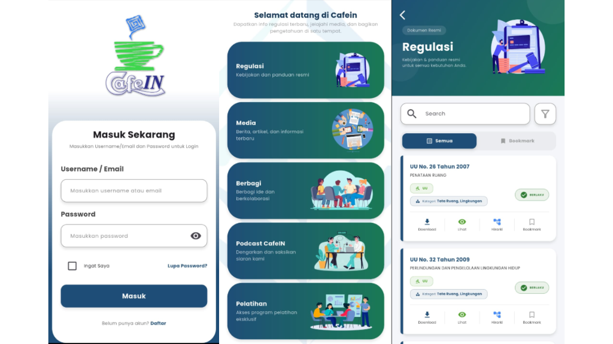

📍 INKINDO Jawa Timur — Tugas Akhir
Aplikasi CAFEIN
Aplikasi mobile berbasis Flutter & Dart sebagai media informasi dan diskusi untuk anggota INKINDO. Dilengkapi fitur Regulasi, Media, Diskusi, Podcast, dan Pelatihan. Admin Dashboard dibangun dengan Laravel, PHP & Bootstrap, serta integrasi Google AI Studio/Gemini untuk manajemen badge pengguna otomatis.